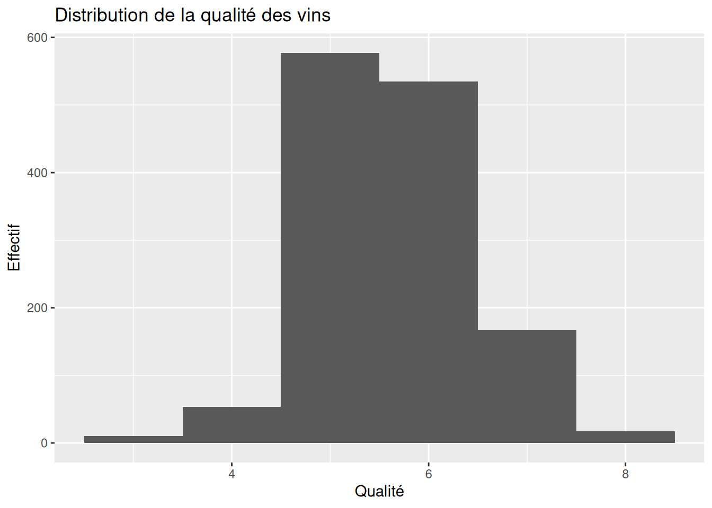
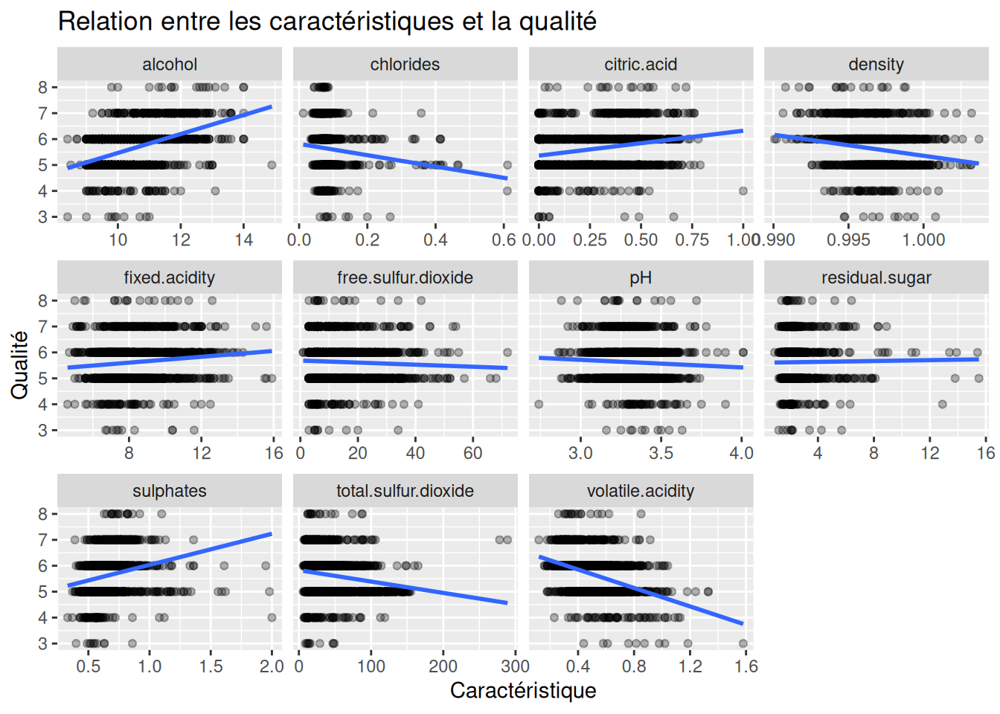

The following objects are masked from 'package:stats':
filter, lag
The following objects are masked from 'package:base':
intersect, setdiff, setequal, union
library(ggplot2)library(sampling)library(tidyr)
Part 1: Loading the dataset, exploratory analysis
The dataset includes measurements taken on wine, as in TP 2. For each wine sample, 11 characteristics were measured (acidity, density, pH, etc.), and after tasting, each received a score. Unlike TP 2, however, you are given the actual score (and not the good quality / bad quality class), so this is a regression problem.
Load the dataset. Perform an exploratory analysis to highlight the characteristics of the data.
fixed.acidity volatile.acidity citric.acid residual.sugar
Min. : 4.600 Min. :0.1200 Min. :0.0000 Min. : 0.900
1st Qu.: 7.100 1st Qu.:0.3900 1st Qu.:0.0900 1st Qu.: 1.900
Median : 7.900 Median :0.5200 Median :0.2600 Median : 2.200
Mean : 8.311 Mean :0.5295 Mean :0.2723 Mean : 2.523
3rd Qu.: 9.200 3rd Qu.:0.6400 3rd Qu.:0.4300 3rd Qu.: 2.600
Max. :15.900 Max. :1.5800 Max. :1.0000 Max. :15.500
chlorides free.sulfur.dioxide total.sulfur.dioxide density
Min. :0.01200 Min. : 1.00 Min. : 6.00 Min. :0.9901
1st Qu.:0.07000 1st Qu.: 7.00 1st Qu.: 22.00 1st Qu.:0.9956
Median :0.07900 Median :14.00 Median : 38.00 Median :0.9967
Mean :0.08812 Mean :15.89 Mean : 46.83 Mean :0.9967
3rd Qu.:0.09100 3rd Qu.:21.00 3rd Qu.: 63.00 3rd Qu.:0.9978
Max. :0.61100 Max. :72.00 Max. :289.00 Max. :1.0037
pH sulphates alcohol quality
Min. :2.74 Min. :0.3300 Min. : 8.40 Min. :3.000
1st Qu.:3.21 1st Qu.:0.5500 1st Qu.: 9.50 1st Qu.:5.000
Median :3.31 Median :0.6200 Median :10.20 Median :6.000
Mean :3.31 Mean :0.6587 Mean :10.43 Mean :5.623
3rd Qu.:3.40 3rd Qu.:0.7300 3rd Qu.:11.10 3rd Qu.:6.000
Max. :4.01 Max. :2.0000 Max. :14.90 Max. :8.000
La variable quality est maintenant une variable quantitative à expliquer, puisque le TP précise qu’il s’agit d’un problème de régression et non de classification.
On peut donc regarder sa distribution :
ggplot(wine, aes(x = quality)) +geom_histogram(binwidth =1) +labs(title ="Distribution de la qualité des vins",x ="Qualité",y ="Effectif" )

Using a preliminary visual exploration of the data, identify the features that seem at first glance to have the most influence on wine quality.
ggplot(vin_long, aes(x = valeur, y = quality)) +geom_point(alpha =0.3) +geom_smooth(method ="lm", se =FALSE) +facet_wrap(~ variable, scales ="free_x") +labs(title ="Relation entre les caractéristiques et la qualité",x ="Caractéristique",y ="Qualité" )
`geom_smooth()` using formula = 'y ~ x'

On peut également calculer les corrélations pour avoir un premier indicateur numérique :
Les variables volatile_acidity, sulphates, alcohool et citric_acid sont assez correlées à la variable qualité. On retrouve aussi ce résultat visuellement.
Attention : une forte corrélation ne signifie pas nécessairement que la variable est réellement la plus importante pour un modèle. Ici, le TP demande seulement une première exploration visuelle. Les arbres CART et les forêts aléatoires permettront ensuite d’évaluer l’importance des variables de manière plus adaptée.
Faut-il standardiser les variables avant toute analyse ?
Non, pas pour tout le TP. C’est une distinction importante.
Pour l’analyse exploratoire → non
Tu peux travailler directement avec les variables originales :
alcohol : environ 8–14 density : environ 0.99–1.00 pH : environ 2–4 sulphates : environ 0.3–2 ...
Le fait qu’elles soient sur des échelles différentes n’empêche pas de faire des histogrammes, boxplots, nuages de points ou corrélations.
Pour CART → non
Un arbre CART n’a pas besoin de variables standardisées.
Par exemple, un arbre peut faire :
alcohol < 10.5
ou
pH < 3.2
Les différences d’échelle ne posent pas de problème.
Pour Random Forest → non
Même chose pour les forêts aléatoires utilisant ranger : la standardisation n’est généralement pas nécessaire, puisque les arbres reposent sur des seuils de séparation.
C’est cohérent avec le TP, qui demande ensuite de construire un arbre CART puis une forêt aléatoire.
En revanche, pour l’UMAP → oui
Ici, le sujet demande explicitement de normaliser les données avant de calculer la projection UMAP :
« Normalize the training set data, then compute the UMAP projection »
Donc tu pourrais retenir :
Étape
Standardiser ?
Analyse exploratoire
❌ Non
Corrélations
❌ Non
CART
❌ Non
Random Forest
❌ Non
UMAP
✅ Oui
Part 2: Sample splitting and model training
In this part, you will train CART tree models and random forests. You will use the ranger package for random forests.
1. Build the necessary datasets for supervised learning
On est dans un problème de régression : quality est la variable cible et les 11 caractéristiques du vin sont les variables explicatives. Le sujet précise bien que le score réel est fourni et qu’il faut donc prédire une valeur quantitative.
On va donc séparer les données en :
jeu d’apprentissage (train) : utilisé pour entraîner le modèle ;
jeu de test (test) : utilisé ensuite pour mesurer l’erreur de généralisation.
On peut par exemple utiliser 80 % pour l’apprentissage et 20 % pour le test.
set.seed(123)# Nombre d'observationsn <-nrow(wine)# Indices des observations utilisées pour l'apprentissageindices_train <-sample(1:n,size =0.8* n)# Jeu d'apprentissagetrain <- wine[indices_train, ]# Jeu de testtest <- wine[-indices_train, ]
On vérifie les dimensions des jeux de données
dim(train)
[1] 1087 12
dim(test)
[1] 272 12
Pour l’apprentissage supervisé, on peut également distinguer explicitement X et Y
# Variables explicativesX_train <- train %>%select(-quality)# Variable à prédirey_train <- train$quality# Variables explicatives du testX_test <- test %>%select(-quality)# Valeurs réelles du testy_test <- test$quality
Identify in the result the competing and surrogate splits for the root node. For this node, what split would the tree use to predict a new wine for which the alcohol content and density were not measured and are therefore missing?
Le sujet demande :
Identifier les competing splits et les surrogate splits pour le nœud racine. Puis déterminer quelle séparation serait utilisée pour un vin dont alcohol et density sont manquants.
Si alcohol est manquant pour une nouvelle observation, l’arbre peut utiliser density pour essayer de reproduire la décision qui aurait été prise avec alcohol.
Dans notre cas
Le sujet te donne une situation où :
alcohol = NA density = NA
Il faut donc regarder dans le résultat de summary(arbre_cart)quelle variable apparaît comme meilleur surrogate split disponible lorsque alcohol et density sont tous les deux manquants.
Visualize the CART tree. Using just the diagram, what would be the prediction for a new wine with the following characteristics: alcohol = 11.5, pH = 2, free.sulfur.dioxide = 7.6, sulphates = 0.42, volatile.acidity = 0.98 ?
Compute the generalization error of this tree and propose a visualization to compare true values with predicted ones.
Comme nous avons gardé un jeu de test, on peut faire les prédictions :
predictions <-predict( arbre_cart,newdata = test)
Calcul de l’erreur
Pour une régression, une mesure classique est l’erreur quadratique moyenne (MSE) :
MSE <-mean((y_test - predictions)^2)MSE
[1] 0.4806082
On peut également calculer la RMSE
RMSE <-sqrt(MSE)RMSE
[1] 0.6932591
La RMSE est particulièrement facile à interpréter car elle est exprimée dans la même unité que quality.
Par exemple, si :
RMSE = 0.72
on peut dire que les prédictions s’écartent en moyenne d’environ 0,72 point de qualité de la valeur réelle, selon cette mesure.
Visualiser les valeurs réelles et prédites
Le graphique le plus adapté est un nuage de points :
Plus les points sont proches de cette droite, plus les prédictions sont bonnes
Now, let’s look at the robustness of CART trees. By generating several new training samples (each with a size equal to 50% of the original data), illustrate that the CART tree is not robust. Comment.
Le sujet demande de :
générer plusieurs nouveaux échantillons d’apprentissage contenant chacun 50 % des données originales, construire un arbre CART pour chacun et montrer que l’arbre n’est pas robuste.
L’idée est de montrer que de petites modifications de l’échantillon d’apprentissage peuvent entraîner des arbres très différents.
Par exemple, on peut créer 10 échantillons contenant 50 % des observations :
set.seed(123)n <-nrow(wine)arbres <-list()for (i in1:10) { indices <-sample(1:n,size =0.5* n ) train_i <- wine[indices, ] arbres[[i]] <-rpart( quality ~ .,data = train_i,method ="anova" )}
On possède maintenant :
arbres[[1]] arbres[[2]] ... arbres[[10]]
soit 10 arbres CART construits sur 10 échantillons différents.
Maintenant, il faut comparer les arbres. On peut par exemple regarder la variable choisie à la racine.
Les 4 arbres sont sensiblement différents. Cela nous montre que la construction de l’arbre dépend nécéssairement du jeu de données
Les arbres CART sont sensibles à l’échantillon d’apprentissage utilisé. En construisant plusieurs arbres à partir d’échantillons contenant 50 % des observations initiales, on observe des différences dans leur structure, notamment dans les variables et les seuils utilisés pour effectuer les séparations. Cette variabilité montre que les arbres CART sont peu robustes : une modification de l’échantillon d’apprentissage peut entraîner une modification importante de l’arbre obtenu. Cette instabilité constitue notamment une motivation pour utiliser des méthodes d’ensemble telles que les forêts aléatoires.